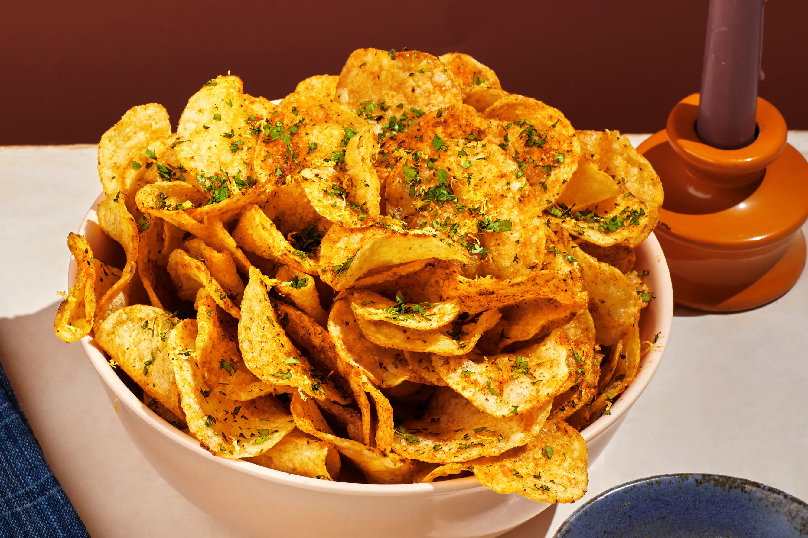

a small, thin, crisp, usually salty piece of food typically prepared by frying, baking, or drying. banana chips. especially : potato chip see also corn chip.
Chips it's also a type of snack that any age can consume.
A potato chip (North American English and Australian English; often just chip) or crisp (British and Irish English) is a thin slice of potato (or a thin deposit of potato paste) that has been deep fried, baked, or air fried until crunchy. They are commonly served as a snack, side dish, or appetizer.
Potato chips are very thin slices of potato that have been fried until they are hard, dry, and crisp, and are eaten cold as a snack. Potato chips are long, thin pieces of potato fried in oil or fat and eaten hot, usually with a meal.
